O professor registra a aula em segundos. A coordenação vê o clima de todas as turmas no mesmo instante. A IA transforma observação solta em relatório pronto.
“Quando educamos com afeto, transformamos realidades.”
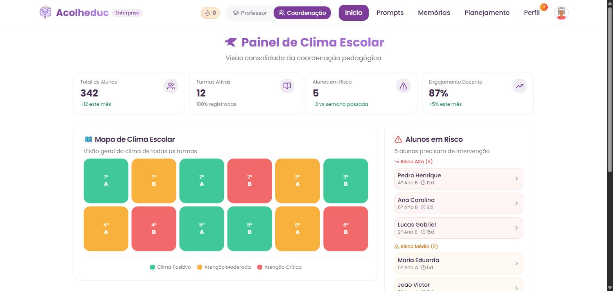
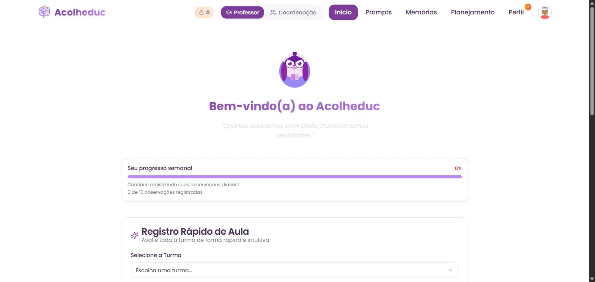
Cobertura BNCC
70%
A plataforma
O mesmo sistema muda de cara conforme quem entra. O professor vê a sala de aula. A coordenação vê a escola. Ninguém precisa aprender a tela do outro.
Escolhe a turma, avalia a participação e a interação, escreve uma linha. O sistema devolve o resumo automático e guarda a evidência no perfil de cada aluno.
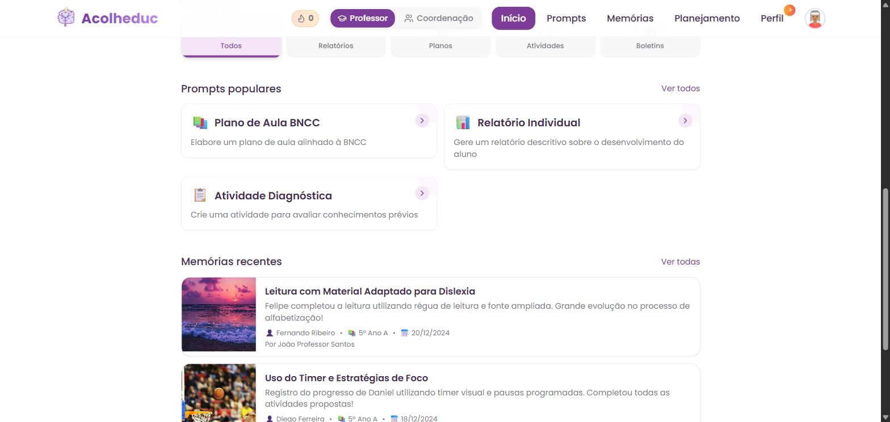
O Mapa de Clima Escolar pinta cada turma de verde, âmbar ou vermelho. Ao lado, os alunos que precisam de intervenção, por nível de risco e há quantos dias.
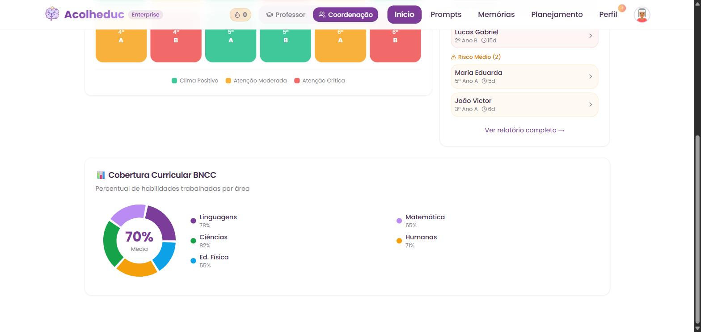
Mapa de Clima Escolar
Cada quadrado é uma turma. A cor vem dos registros que os professores fizeram naquela semana. Uma turma que esfria aparece na tela antes de aparecer no conselho de classe.
Mapa de Clima Escolar
Visão geral do clima de todas as turmas
Reprodução da tela do produto com dados de demonstração.
O que a coordenação vê junto
Alunos em Risco
A lista sai do mapa e vira nome, turma e há quantos dias o sinal está aceso.
Área de Perfil
Informações, resumo do dia, e três abas que respondem o que aconteceu, o que foi tentado e o que a IA leu nisso tudo.
Participação de 1 a 5, interesse, interação, o texto do professor e um resumo automático. Com o nome de quem registrou, para a conversa com a família ter lastro.
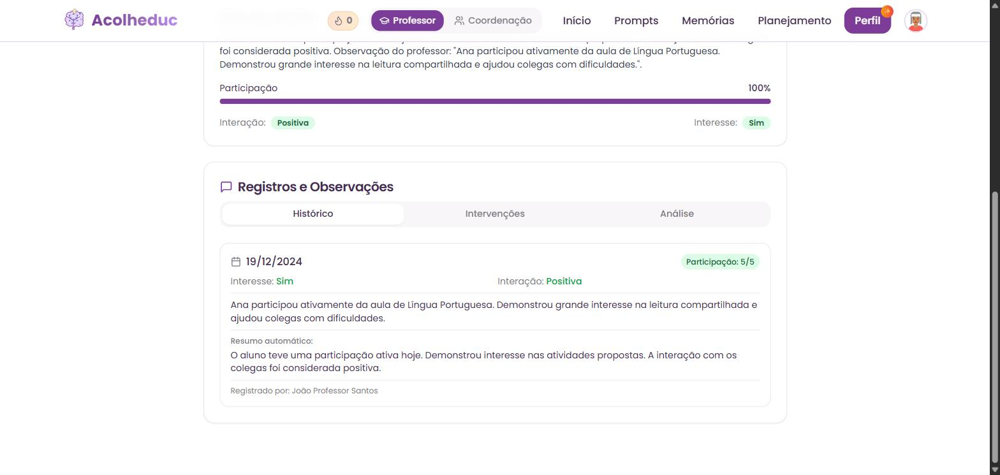
Resposta à Intervenção deixa de ser uma pasta separada. O que foi proposto para o aluno vive ao lado do que foi observado dele, e a coordenação acompanha sem pedir relatório.
Módulo RTI
Ligado ou desligado por escola, nas configurações do administrador.
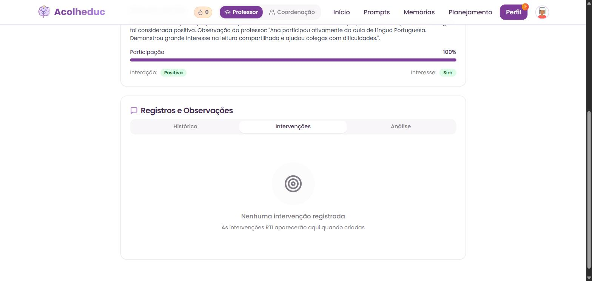
Com base nos registros, a Análise de Progresso aponta pontos fortes e áreas de desenvolvimento, sempre dizendo em quantos registros ela se apoiou.
Insights baseados nos registros
A quantidade de observações usada aparece junto com o insight.
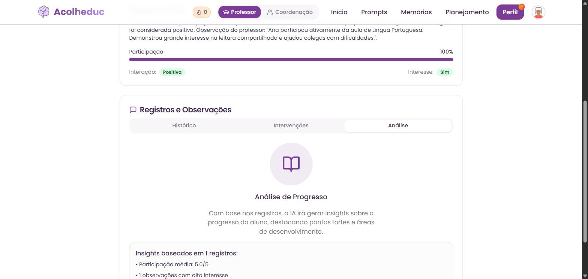
IA pedagógica
Relatórios, planos, atividades e boletins já vêm escritos e categorizados. O professor escolhe, ajusta e gera. Nada de aprender engenharia de prompt.
Relatórios
Relatório Individual
Descritivo sobre o desenvolvimento do aluno
Planos
Plano de Aula BNCC
Alinhado à Base Nacional Comum Curricular
Atividades
Atividade Diagnóstica
Para avaliar conhecimentos prévios
Boletins
Parecer Bimestral
Parecer descritivo para o boletim
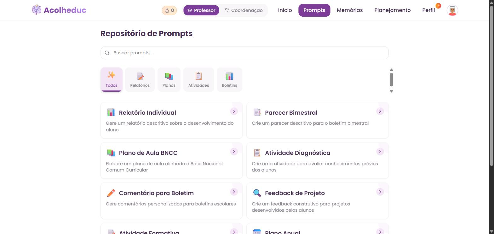
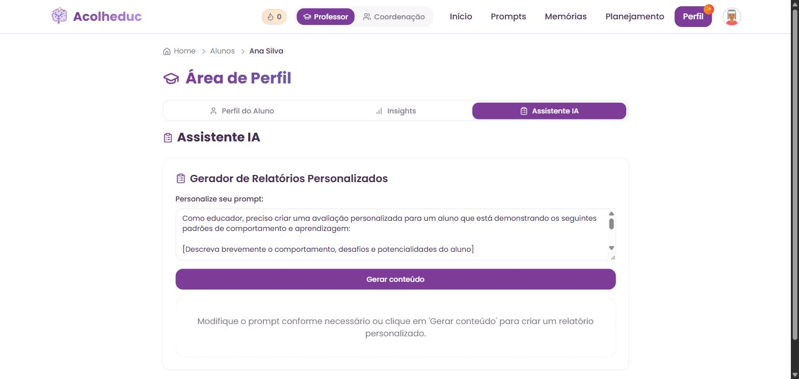
Insights pedagógicos
A Visão Geral da Turma separa Gráficos, Destaques e Atenção Especial. É o dado que já existe nos registros, virando gráfico sem ninguém montar planilha.
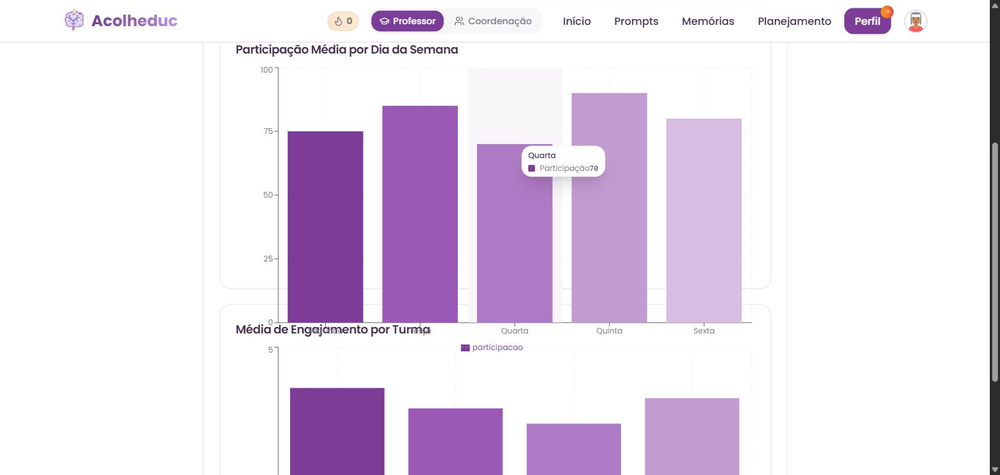
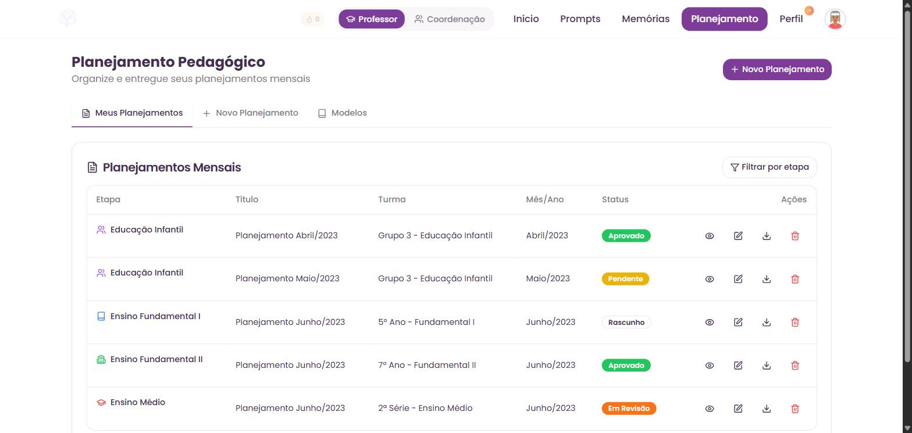
Planejamento pedagógico
Da Educação Infantil ao Ensino Médio, cada planejamento mensal tem etapa, turma, mês e um status que todo mundo enxerga.
Multi-tenant de verdade: cada escola tem seu endereço, seus usuários, seu logo e os módulos que ela decidiu ligar.
Painel do administrador
Usuários com cargo e status, identidade da escola com upload de logo, e uma chave para cada módulo.
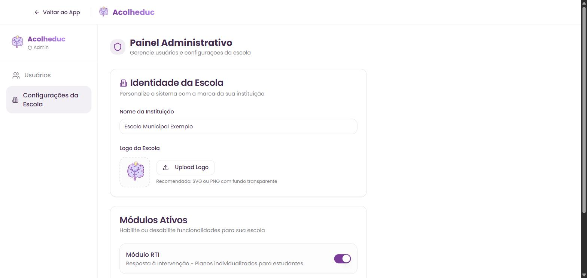
Por que Acolheduc
Uma forma nova de acompanhar, documentar e desenvolver cada aluno, em qualquer rede de ensino.
Stack tecnológica
React
Frontend
TypeScript
Linguagem
Node.js
Backend
PostgreSQL
Banco de dados
Prisma
ORM
OpenAI
IA
Arquitetura Auri Gen 2
Performance e escalabilidade enterprise, com deploy contínuo e monitoramento.
Implantação em redes de qualquer porte
Veja o acompanhamento pedagógico sair das planilhas e virar inteligência em tempo real. A conversa inicial é sem custo.